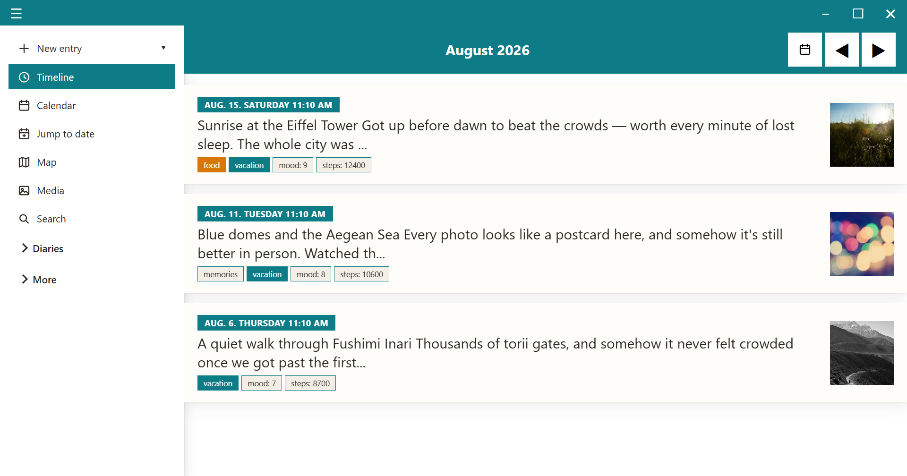
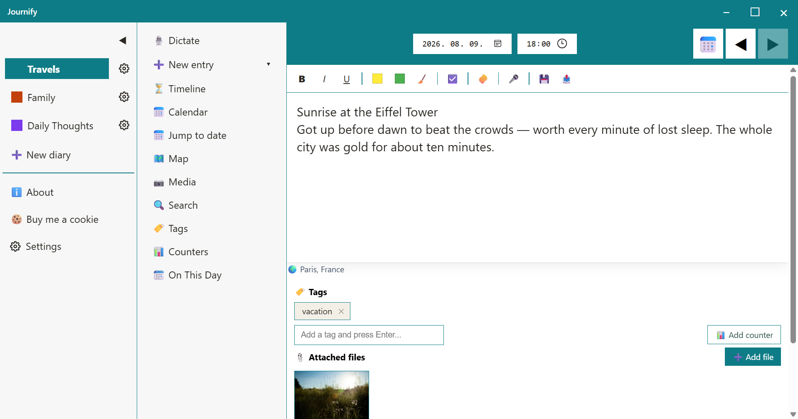
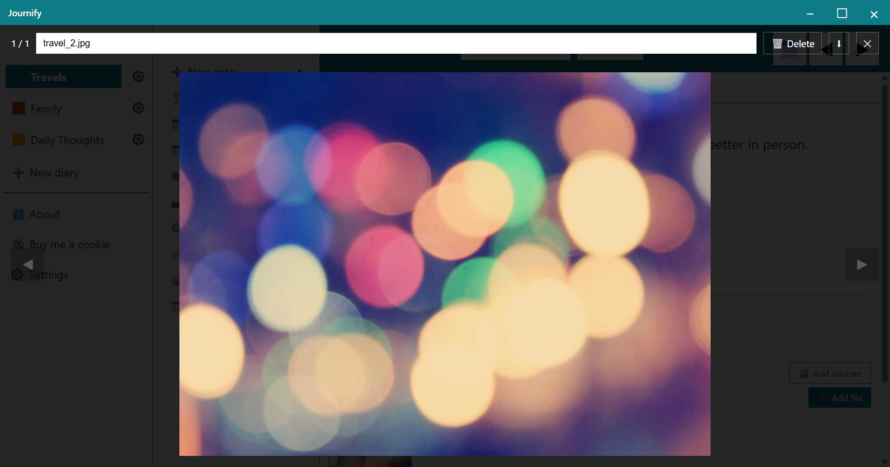
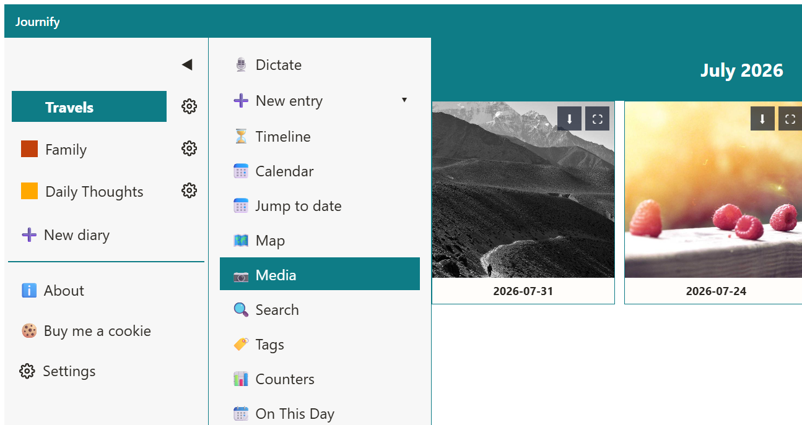
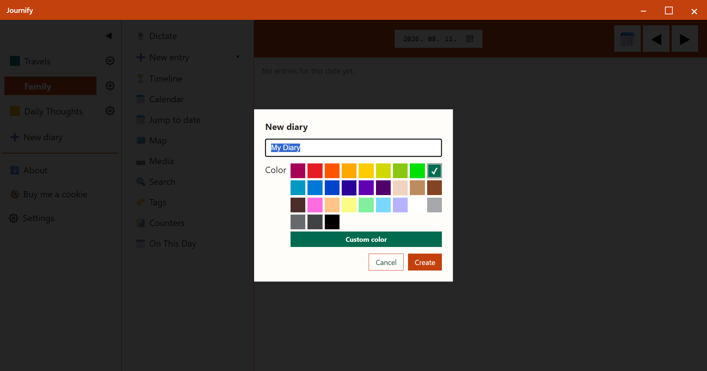

Journify App
Journify
Egy modern, privát napló Windowsra és Androidra.
Elérhető a Microsoft Store-ban — hamarosan jön a Google Play-re és Linuxra is.





Mit tud a Journify?
- Valódi írás élmény. Félkövér, dőlt, aláhúzott szöveg, kiemelő színek, feladatlisták és beágyazott fotók — úgy írhatsz, ahogy egy modern alkalmazástól elvárható, nem csak egy sima szövegdobozban.
- Böngéssz a naplódban a saját stílusodban. Egy nagy havi naptár minden naphoz fotóelőnézettel, egy görgethető idővonal mindenről, amit valaha írtál, egy hónapok szerint csoportosított fotógaléria, vagy keress bármelyik dátumban, címben és szóban.
- Címkék és számlálók. Címkézd a bejegyzéseket kedved szerint, és kövesd nyomon a számokat az idő múlásával — testsúly, hangulat, lépésszám, bármi, amit számmal ki tudsz fejezni — egy vonaldiagrammal, ami megmutatja a trendet.
- Ezen a napon. Nézd meg, mit írtál a mai dátumon korábbi években.
- Sablonok. Mentsd el egy gyakran írt bejegyzéstípus kiindulópontját — egy napi bejelentkezőt, egy heti összegzést — és töltsd ki egyetlen kattintással.
- Csatolmányok. Csatolj fotókat és fájlokat bármelyik bejegyzéshez; a képek megjelennek a bejegyzésben és a havi galériában is.
- Helyszín. Add meg vagy módosítsd egy bejegyzés helyszínét, és nézd meg a naplód térképen, hely szerint csoportosítva.
- Exportálás Wordbe. Alakítsd a naplód egy adott időszakát szépen formázott DOCX dokumentummá, tartalomjegyzékkel és a fotóiddal együtt.
- Mentés, és váltás másik alkalmazásból. Mentsd el a teljes naplódat — bejegyzéseket és csatolmányokat — egyetlen, általad kezelt fájlba. Ha Diariumból vagy Day One-ból jössz, a Journify közvetlenül tudja importálni a meglévő naplódat, és vissza is tud exportálni mindkét formátumba.
- Felhő tárhely szinkron, végpontok közötti titkosítással. Tartsd szinkronban a naplódat az eszközeid között a saját felhő tárhely fiókod használatával; minden titkosítva van egy olyan jelmondattal, amit csak te ismersz, mielőtt bármi elhagyná az eszközödet.
- Megosztás a Journify-vel. Androidon oszthatsz meg szöveget, képet vagy fájlt bármely alkalmazásból közvetlenül egy naplóbejegyzésbe.
- Magyar és angol. A felület automatikusan igazodik a rendszered nyelvéhez, de a beállításokban felülbírálhatod.
- Windows és Android. Elérhető natív asztali alkalmazásként Windowsra, és Android alkalmazásként is.
Adatvédelmi irányelvek
A Journify fejlesztőjének legfontosabb prioritása az adataid védelme. Ez az irányelv elmagyarázza, hogyan kezeljük az adataidat.
1. Milyen adatokat gyűjtünk?
Semmilyet. A Journify (és a fejlesztője) nem gyűjt, nem tárol és nem továbbít semmilyen személyes adatot, naplóbejegyzést, képet vagy fájlt külső szerverekre. Minden, amit az alkalmazásban létrehozol, kizárólag a saját, helyi eszközödön tárolódik.
2. Felhő tárhely szinkron és engedélyek
Az alkalmazás tartalmaz egy opcionális szinkronizációs funkciót, hogy biztonságban tudhasd az adataidat, és több eszközről is elérhesd őket, a saját, általad összekapcsolt felhő tárhely fiókodat felhasználva. A funkció használatához az alkalmazás csak a saját szinkron mappájának létrehozásához és eléréséhez szükséges minimális engedélyt kéri.
Hogyan használjuk ezeket az engedélyeket?
Az alkalmazás létrehoz egy külön mappát a saját felhő tárhely fiókodban. Az alkalmazás kizárólag az általa létrehozott szinkronizációs fájlokhoz fér hozzá. A Journify nem látja, nem olvassa és nem módosítja a meglévő személyes fájljaidat, fotóidat vagy dokumentumaidat abban a fiókban. A hozzáférés szigorúan a naplóbejegyzések szinkronizálására korlátozódik.
Végpontok közötti titkosítás
Mielőtt egy naplóbejegyzés elhagyná az eszközödet, a Journify titkosítja egy olyan jelmondattal, amit te állítasz be, és csak te ismersz. Ez a jelmondat sosem kerül elküldésre a felhő tárhely szolgáltatónak, a fejlesztőnek vagy bármely más szervernek. Ennek eredményeként a felhő tárhely fiókodban tárolt diary_sync.json fájl titkosított: sem a szolgáltató, sem a Journify fejlesztője nem tudja elolvasni a tartalmát.
Fontos: mivel a jelmondatod az egyetlen módja a szinkronizált adataid visszafejtésének, ha elfelejted, a szinkronizált naplóbejegyzéseid többé nem állíthatók helyre — még a fejlesztő által sem. Tárold a jelmondatodat biztonságos helyen, és érdemes helyi mentéseket is készítened (lásd a Felhasználási feltételeket lentebb).
3. Adatmegosztás harmadik felekkel
Mivel az alkalmazás fejlesztője nem fér hozzá az adataidhoz, azok soha nem adhatók el, nem továbbíthatók és nem oszthatók meg semmilyen harmadik féllel. Az adataid kizárólag az eszközöd és a saját felhő tárhely fiókod között utaznak, az adott szolgáltató titkosított csatornáin keresztül.
4. Az adataid törlése
Ha törölni szeretnéd az adataidat a felhő tárhely fiókodból: válaszd a „Leválasztás” lehetőséget az összekapcsolt szolgáltató mellett az alkalmazás beállításaiban, majd töröld a journify mappát abban a fiókban.
Felhasználási feltételek
A Journify „ahogy van” áll rendelkezésre. Bár mindent megteszek annak érdekében, hogy az alkalmazás megbízhatóan működjön, a fejlesztő nem vállal felelősséget semmilyen adatvesztésért vagy kárért, amely a szoftver vagy hardverhiba vagy egy harmadik fél szolgáltatásának (pl. a felhő tárhely szolgáltatódnak) a kiesése miatt következik be.
Javaslom, hogy rendszeresen készíts helyi mentést a fontos bejegyzéseidről az alkalmazás beállítások ablakában található exportálási funkcióval.
Ha használod a felhő tárhely szinkronizációt, gondosan jegyezd meg a titkosítási jelmondatodat: mivel a bejegyzéseid végpontok között titkosítottak, a jelmondat elvesztése a szinkronizált adataidhoz való hozzáférés végleges elvesztését jelenti — sem a szolgáltató, sem a fejlesztő nem tudja helyreállítani vagy visszaállítani azt.
Licenc
A Journify zárt forráskódú szoftver. Minden jog fenntartva © Répássy László. Az alkalmazás nem nyílt forráskódú: a fejlesztő előzetes írásbeli engedélye nélkül nem másolható, nem módosítható, nem fejthető vissza, nem terjeszthető tovább, és nem készíthető belőle származékos mű. Az alkalmazást a hivatalos áruházi terjesztés szerint szabadon használhatod.